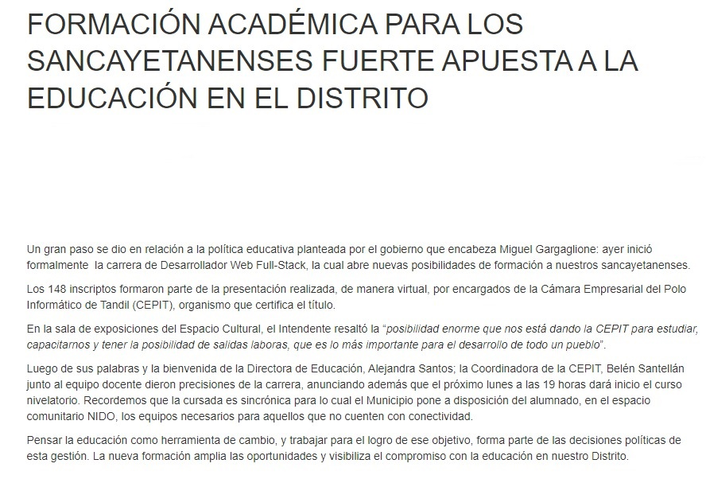

Noticias de San Cayetano
08/05/2023:

Población:
Cuenta con 9611 habitantes (Indec, 2022),
lo que representa un incremento del 14,4%
frente a los 8399 habitantes (Indec, 2010) del censo anterior.
Educación:

Fuente: formacion-academica-para-los-sancayetanenses-fuerte-apuesta-la-educacion-en-el-distrito